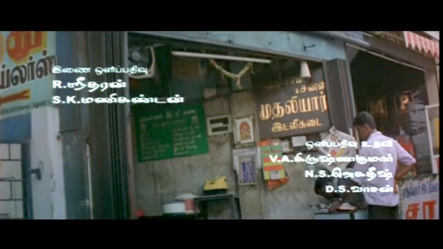
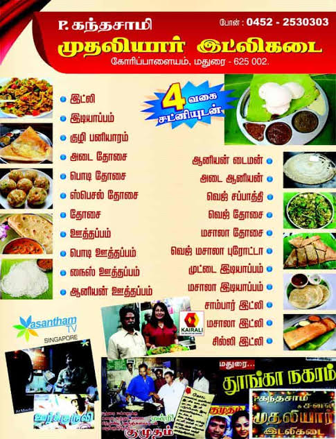

In the 1960s, Late Thiru P. Kandasamy Mudaliyar opened an evening stall next to the Goripalayam bus stand in Madurai (625 002). It became Mudaliyar Idly Kadai (முதலியார் இட்லி கடை).
A prime corner
The Government Hospital, American College and the Court were all nearby. Hospital staff and visitors, college students, and lawyers and clerks from the Court ate here. So did travellers getting off buses at Goripalayam.
Open till 3 am
The kadai opened in the evening and stayed open until 3 am. When most of Madurai was asleep, you could still get idli, dosa and muttai idli here. Film stars and public figures came to eat or picked up takeaway.

On screen in Kadhal
The kadai appears in the Tamil film Kadhal (2004), starring Bharath and Sandhya. It was directed by Balaji Sakthivel, with music by Joshua Sridhar.
In the press
Kumudam, Vasantham TV Singapore and Kairali TV all covered the kadai. A Tamil newspaper column recommended its muttai idli. The old menu board listed the idli as coming with “4 வகை சட்னியுடன்”, four kinds of chutney.

From Goripalayam to Melamadai
In 2025 the Goripalayam premises were acquired by the government for the bridge construction. On 22 February 2026 the restaurant reopened as Hotel Mudaliyar, in a three-floor building on Pandi Kovil Ring Road, Melamadai, managed by Mr K. Tamilselvan. Directions and hours.